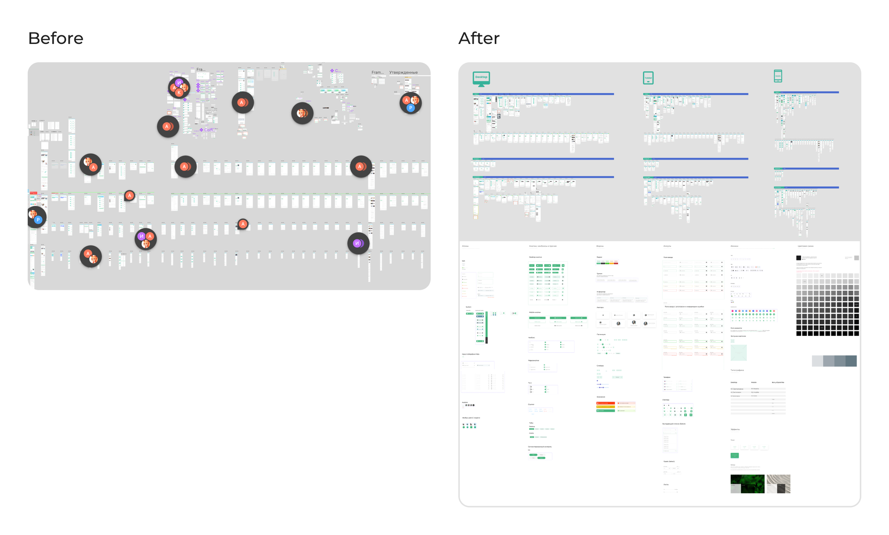
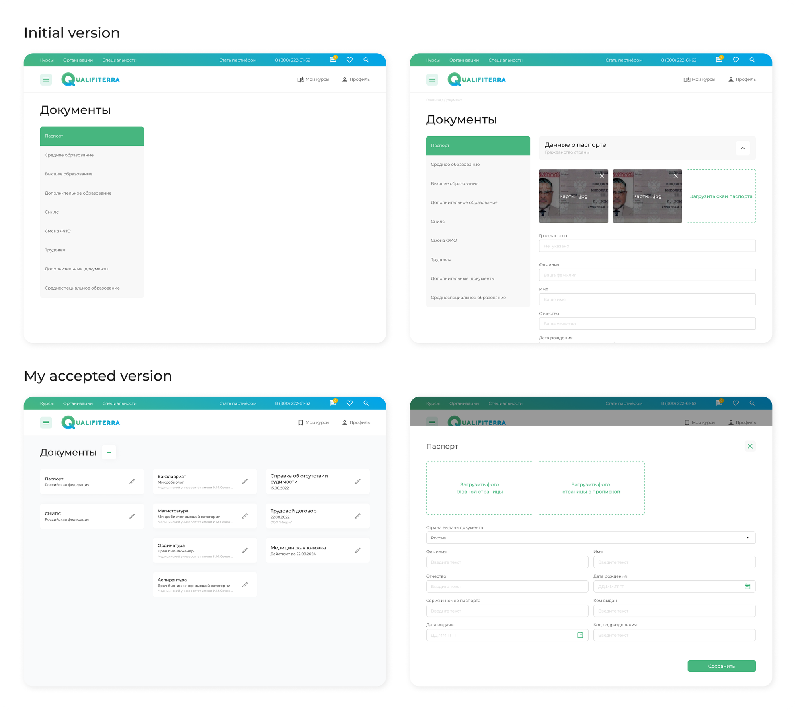
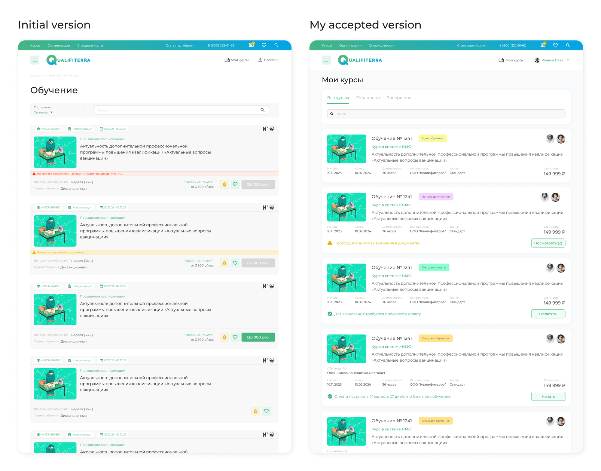
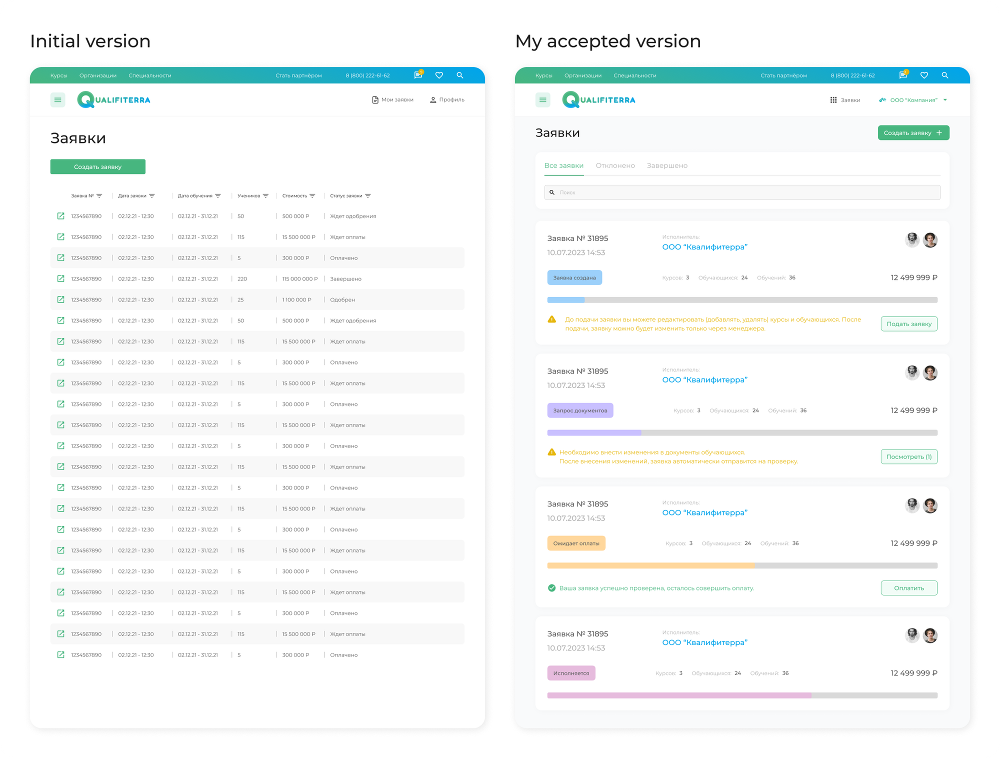
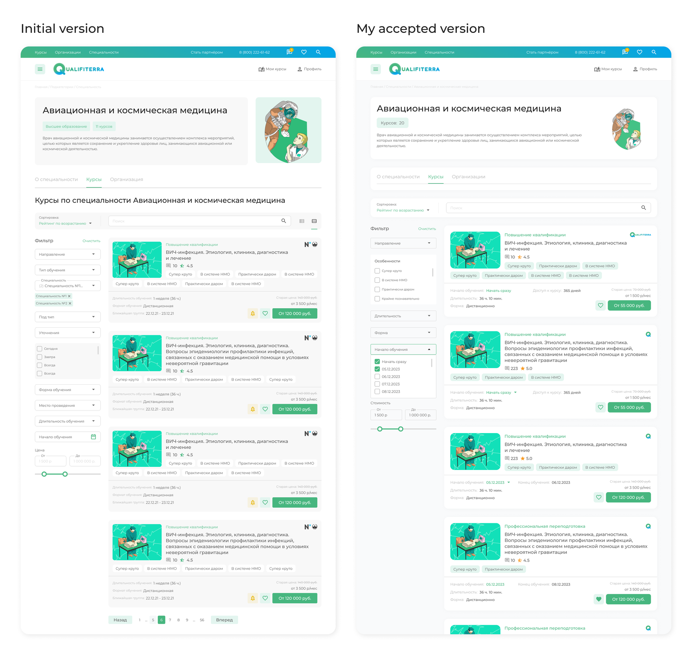
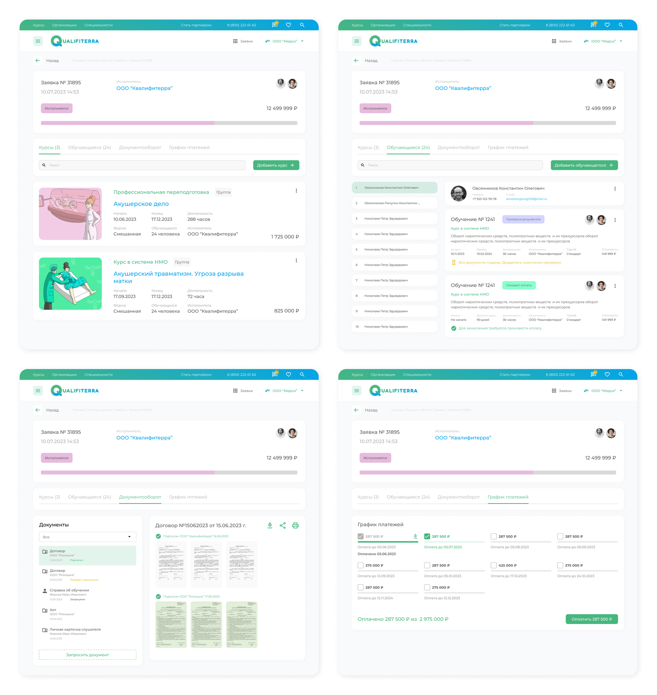
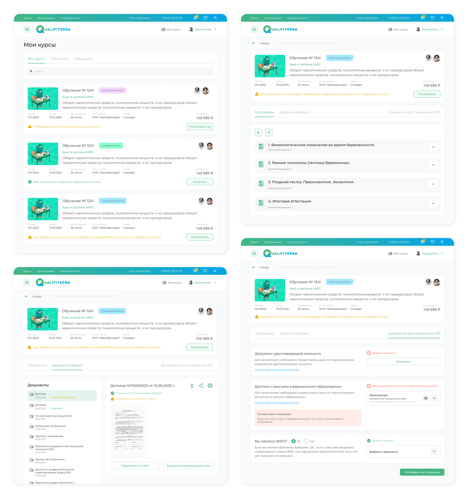
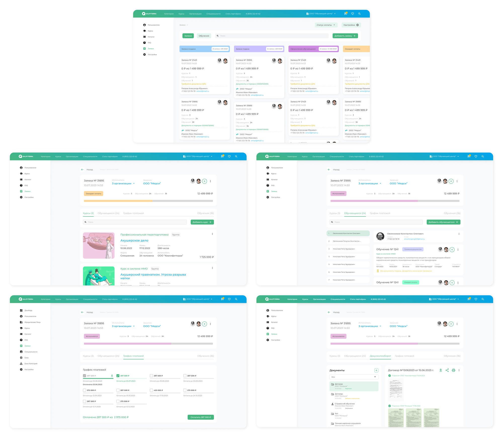
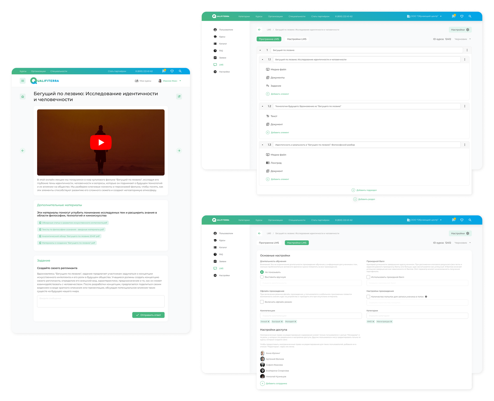

Qualifiterra EdTech Platform
Project Overview
Online learning platform that offers courses, certificate and degree programs primarily in medical specialties. This service includes:
- Administration panel for company internal staff and its partners.
- LMS (Learning Management System).
- End-user platform.
My Role
As a UX/UI designer I was responsible for crafting intuitive and engaging user interfaces, developing the service' logic, and ensuring exceptional experience for all users: internal staff, partners, and customers.
The Goals
- Review the existing designs to identify gaps and areas for improvement.
- Set up the logic and design the interfaces for the following: CRM and LMS systems, adding new courses, employees, and educational institutions, electronic document management.
- Improve filtering options to enable users to navigate content effortlessly.
The Process
Having analyzed the existing design, it was decided to reorganise the interfaces and break them down into components.
Changes in initial designs
Next, I identified areas for improvement and missing screens. The first step was to change the logic and interface of the personal account screens:
1. Changed logic and redesigned the user document uploading page.
2. Redesigned user (B2C) courses page, changed navigation and search logic, added status bars.
3. Redesigned user (B2B) application page, changed navigation and search logic, added progress bars.
4. Redesigned category page (both B2C and B2B), changed filter logic, courses cards and added additional features.
Completely new designs and features
The next step was to design new screens essential for the service to be fully functional. It involved adding missing features and interfaces for smooth operations and user convenience.
1. Designed new logic and interfaces for businesses to track their requests on the platform. B2B customers can collect several courses in one request, add or remove employees who should undertake courses and manage document flow.
2. Designed new logic and interfaces for the learning process tracking. User can check the status, quickly pay for the courses, upload or download the documents and navigate in the learning program (connected to LMS).
3. Designed new logic and interfaces for processing customers requests by the internal staff. Here I implemented the set of unified templates, which accelerated product development 2 times and streamlined operations. If any issues arise from the customer side, internal staff can handle them more effectively because they will see the same page structure.
4. Designed new logic and interfaces for the LMS system for service and customer sides. I implemented an online lesson constructor, allowing administrators to choose various types of content to upload for different lessons.
Further updates to be implemented
- Chat Feature:
The chat feature allows users to communicate directly with each other within the platform. It's a place for students to ask questions, collaborate on projects, or just share ideas and experiences. Teachers and experts can also use the chat to provide guidance, answer queries, and give feedback. This feature makes learning more interactive and engaging.
- Global Search:
With the global search function, users can quickly find courses, resources, and information across the entire platform. Whether you're looking for a specific topic, a particular course, or an expert in a field, the global search makes it easy to locate what you need. It's designed to save time and help users efficiently navigate through the variety of educational content available.
- News Section:
The news section keeps users updated on the latest developments, events, and offerings in the field of medical and pharmaceutical education. From new course launches and updates to industry news and expert insights, this feature ensures that users have access to fresh and relevant information. It's a valuable resource for staying informed about trends and advancements in the sector.
My Accomplishments
- Designed the logic and interfaces for the complex EdTech platform from scratch.
- Redesigned existing screens to ensure all parts of the platform have the same logic and elements style.
- Created 1000+ screens, built a clear structure and smooth connections between screens inside the platform.
- Implemented unified templates, that accelerated development process 2 times.
- Implemented online lesson constructor, as a new feature for LMS.